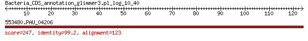

bitscore colors: <40, 40-50 , 50-80, 80-200, >200
 BLASTP 2.2.31+
Reference: Stephen F. Altschul, Thomas L. Madden, Alejandro A.
Schaffer, Jinghui Zhang, Zheng Zhang, Webb Miller, and David J.
Lipman (1997), "Gapped BLAST and PSI-BLAST: a new generation of
protein database search programs", Nucleic Acids Res. 25:3389-3402.
Reference for composition-based statistics: Alejandro A. Schaffer,
L. Aravind, Thomas L. Madden, Sergei Shavirin, John L. Spouge, Yuri
I. Wolf, Eugene V. Koonin, and Stephen F. Altschul (2001),
"Improving the accuracy of PSI-BLAST protein database searches with
composition-based statistics and other refinements", Nucleic Acids
Res. 29:2994-3005.
Database: eggnogv4.proteins.all.fa
14,875,530 sequences; 5,112,597,290 total letters
Query= Bacteria_CDS_annotation_glimmer3.pl_log_10_40
Length=123
Score E
Sequences producing significant alignments: (Bits) Value
553480.PAU_04206 247 2e-82
> 553480.PAU_04206
Length=123
Score = 247 bits (630), Expect = 2e-82, Method: Compositional matrix adjust.
Identities = 122/123 (99%), Positives = 123/123 (100%), Gaps = 0/123 (0%)
Query 1 MIQEQTMLNVADNSGARRVMCIKVLGGSHRRYAHVGDIIKVTIKEAIPRGKVKKGDVLKA 60
MIQEQTMLNVADNSGARRVMCIKVLGGSHRRYAHVGDIIK+TIKEAIPRGKVKKGDVLKA
Sbjct 1 MIQEQTMLNVADNSGARRVMCIKVLGGSHRRYAHVGDIIKITIKEAIPRGKVKKGDVLKA 60
Query 61 VVVRTKKGVRRPDGSVIRFDGNACVLLNNTSEQVIGTRIFGPVTRELRNEKFMKIISLAP 120
VVVRTKKGVRRPDGSVIRFDGNACVLLNNTSEQVIGTRIFGPVTRELRNEKFMKIISLAP
Sbjct 61 VVVRTKKGVRRPDGSVIRFDGNACVLLNNTSEQVIGTRIFGPVTRELRNEKFMKIISLAP 120
Query 121 EVL 123
EVL
Sbjct 121 EVL 123
Lambda K H a alpha
0.322 0.139 0.391 0.792 4.96
Gapped
Lambda K H a alpha sigma
0.267 0.0410 0.140 1.90 42.6 43.6
Effective search space used: 128814954080